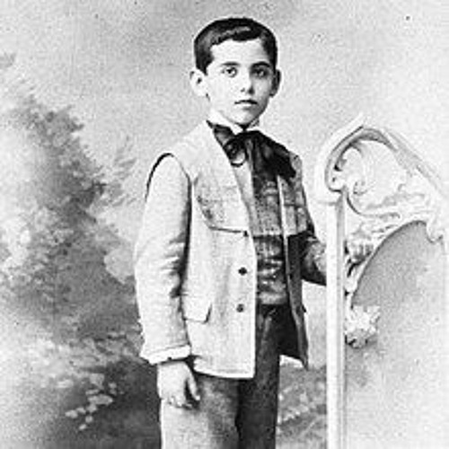

Origins
Walt Whitman, the renowned American poet, was born in 1819 in the hamlet of West Hills, located on Long Island, New York. He grew up in a Quaker household on the family farm, where he learned to enjoy the natural beauty and rugged individualism that would later become central themes in his poetry.
Whitman pursued several diverging occupations throughout his life, each of which contributed to the development of his unique poetic voice and perspective. As a young man, he worked as a journalist, reporting on diverse and contradictory topics and honing his writing skills. He also spent time as a teacher, imparting his knowledge and passion for learning to students. Additionally, Whitman was a government clerk. Giving him a unique vantage point from which to observe the inner workings of American society and politics. 
These varied experiences, combined with Whitman's innate curiosity and keen observational skills, helped to shape the expansive, inclusive vision of American identity that would become the hallmark of his poetry. In 1855, Whitman published his groundbreaking collection "Leaves of Grass," which marked a radical departure from the traditional poetic forms of the time. With its innovative free verse style and celebration of the individual and the natural world, the book established Whitman as a pioneering voice in the canon of American literature.
Throughout his career, Whitman continued to refine and expand his poetic vision, drawing inspiration from the Transcendentalist movement and the abolitionist cause. His powerful, lyrical poems challenged readers to embrace the boundless potential of the human spirit and to see the beauty and wonder in the world around them. Today, Whitman's legacy continues to connect with writers and readers alike as his work change the world.